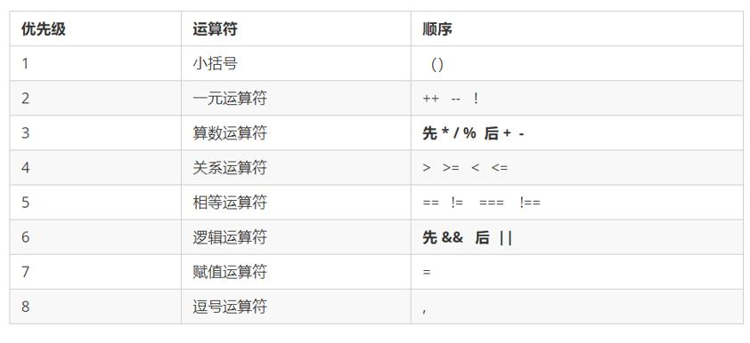
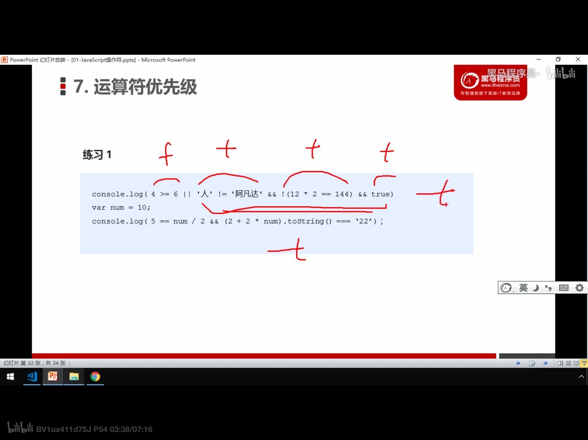
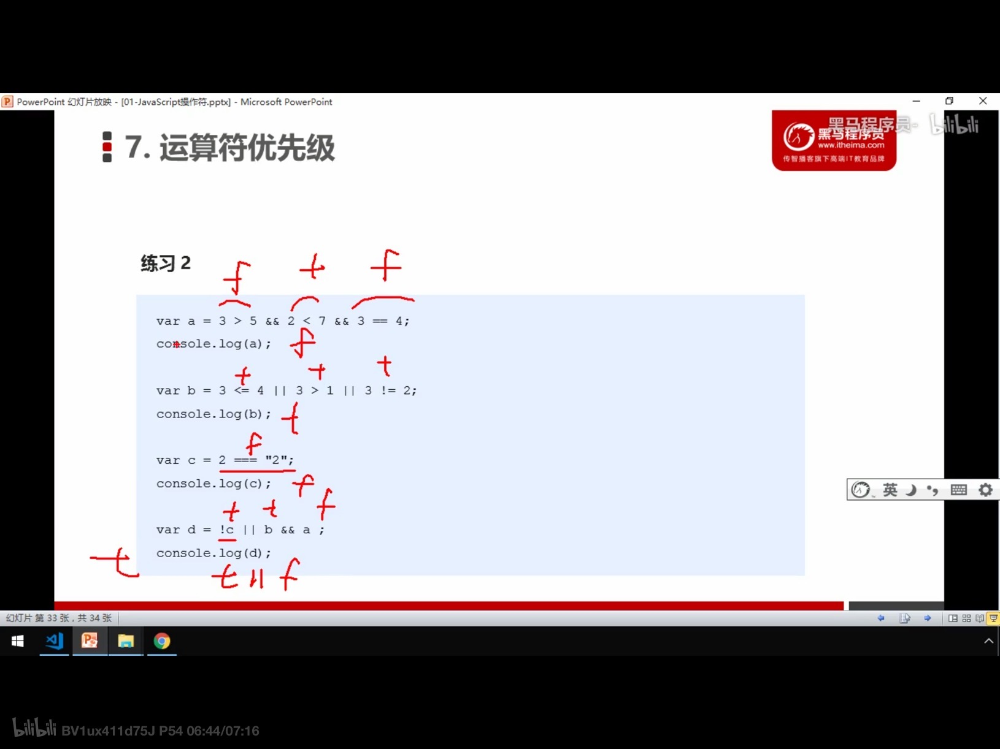

js format会给运算符自动空格
(1)算数运算符 + - * / %
1.%取模/取余数 9 % 2 = 1
5 % 3 = 2
3 % 5 = 3
2.浮点数要转换成二进制，有误差
尽量避免浮点数直接运算
也不要直接判断两个浮点数是否相等
3.
表达式(右) 数字/变量和运算符组成
返回值(左) 表达式计算的结果
(2)递增和递减运算符
++和--，放变量前后都可以，叫做 前置/后置 递增递减运算符
单独写的时候二者一样，组合计算的时候：
前置：先 自加减， 再 返回值 (先己后人)
后置：先 返回原值，再 自加减 (先人后己)(用得多)
(3)比较运算符
返回true和false
包括 > < >= <= == != === !==
其中 ===和!== 为全等， 要求值和数据类型都一致
== 符号会转型，会把字符串转换为数字
(4)逻辑运算符
1. && || !
与 或 非
2.短路运算(逻辑中断)原理： 当有多个表达式时，左边可以确定结果时，不再继续运算右边表达式
1)与：表达式1 && 表达式2
1真，返回2
1假，返回1
任何只有逻辑&&参与的表达式中，有 0 空字符串'' null undefined NaN，会立刻中断 并返false
2)或：表达式1 || 表达式2
1真，返回1
1假，返回2
任何只有逻辑||参与的表达式中，有任何"真"，就会立刻中断 并返回该值
3)任何既有&&又有||的表达式，先看&&
(5)赋值运算符
= += -= *= /= %=
(6)优先级

一元运算符的意思是 用了这个运算符，只用一个操作数(变量)就可以完成，比如 !num 和 ++num

